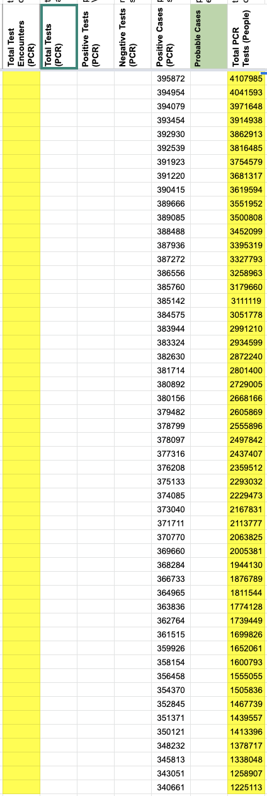
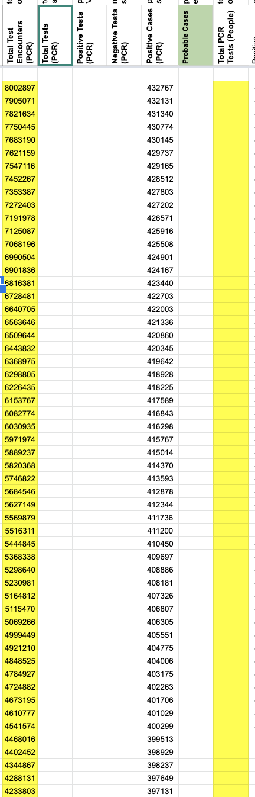

#1082: Removing values from the API field Negative from AK, CA, DC, GA, KY, NY, OH, OR, TX, VA and WA
Issue number 1082
jaclyde opened this issue on January 27, 2021, 3:13 PM PST
Labels Data quality
States: Alaska, California, Washington DC, Georgia, Kentucky, New York, Ohio, Oregon, Texas, Virginia, Washington
Issue: We are removing negatives that were created from mixed units (specimens minus cases or test encounters minus cases) for states that are using explicit totals in our main total test results field (called totalTestResults in the API). See the Data FAQ for additional explanation.
Comments
California: Never reported negatives directly, but did report in Total tests (people) until April 21, 2020. Removing time series from present to April 22, 2020.
Values Removed: Changes.txt
Washington DC: Never reported negatives directly, and has always reported encounters, removing total time series
Values Removed: Changes.txt
Georgia: Never reported negatives directly and always reported in specimens, removing total time series
Values Removed: Changes.txt
Kentucky: Never reported negatives directly and always reported in specimens, removing total time series
Values Removed: Changes.txt
New York: Never reported negatives directly and always reported in encounters, removing total time series
Values Removed: Changes.txt
Ohio: Never reported negatives directly and always reported in specimens, removing total time series
Values Removed: Changes.txt
Oregon: Never reported negatives directly, but did report in Total tests (people) until December 1, 2020. Removing time series from present to December 2, 2020.
Values Removed: Changes.txt
Texas: Never reported negatives directly and always reported in specimens, removing total time series
Values Removed: Changes.txt
Virginia: Never reported negatives directly and always reported in encounters, removing total time series
Values Removed: Changes.txt
Washington: Negatives were backfilled with values calculated from total tests (encounters)-confirmed cases in August 2020. Removing total time series.
Values Removed: Changes.txt
#1082: Removing values from the API field Negative from AK, CA, DC, GA, KY, NY, OH, OR, TX, VA and WA
Issue number 1082
jaclyde opened this issue on January 27, 2021, 3:13 PM PST
Labels Data quality
States: Alaska, California, Washington DC, Georgia, Kentucky, New York, Ohio, Oregon, Texas, Virginia, Washington
Issue: We are removing negatives that were created from mixed units (specimens minus cases or test encounters minus cases) for states that are using explicit totals in our main total test results field (called totalTestResults in the API). See the Data FAQ for additional explanation.
Comments
Alaska: Never reported negatives directly and always reported in specimens, removing total time series
Values Removed: Changes.txt
California: Never reported negatives directly, but did report in Total tests (people) until April 21, 2020. Removing time series from present to April 22, 2020.
Values Removed: Changes.txt
Washington DC: Never reported negatives directly, and has always reported encounters, removing total time series
Values Removed: Changes.txt
Georgia: Never reported negatives directly and always reported in specimens, removing total time series
Values Removed: Changes.txt
Kentucky: Never reported negatives directly and always reported in specimens, removing total time series
Values Removed: Changes.txt
New York: Never reported negatives directly and always reported in encounters, removing total time series
Values Removed: Changes.txt
Ohio: Never reported negatives directly and always reported in specimens, removing total time series
Values Removed: Changes.txt
Oregon: Never reported negatives directly, but did report in Total tests (people) until December 1, 2020. Removing time series from present to December 2, 2020.
Values Removed: Changes.txt
Texas: Never reported negatives directly and always reported in specimens, removing total time series
Values Removed: Changes.txt
Virginia: Never reported negatives directly and always reported in encounters, removing total time series
Values Removed: Changes.txt
Washington: Negatives were backfilled with values calculated from total tests (encounters)-confirmed cases in August 2020. Removing total time series.
Values Removed: Changes.txt
#1049: [NY] Patch 01/04 timestamp
Issue number 1049
hmhoffman opened this issue on January 6, 2021, 8:03 AM PST
State: NY
Dates affected: 01/04
Describe the issue: On January 4, 2021, the timestamp for New York was accidentally entered as 01/04 14:00 but should have been 01/03 14:00.
Comments
Rows edited: 1 NY 2021-01-04 lastUpdateTime: 2021-01-03 19:00:00+00:00 (was 2021-01-04 19:00:00+00:00)
#1049: [NY] Patch 01/04 timestamp
Issue number 1049
hmhoffman opened this issue on January 6, 2021, 8:03 AM PST
State: NY
Dates affected: 01/04
Describe the issue: On January 4, 2021, the timestamp for New York was accidentally entered as 01/04 14:00 but should have been 01/03 14:00.
Comments
Rows edited: 1 NY 2021-01-04 lastUpdateTime: 2021-01-03 19:00:00+00:00 (was 2021-01-04 19:00:00+00:00)
#1032: [NY] Clear confirmed cases history
Issue number 1032
karaschechtman opened this issue on December 28, 2020, 7:03 AM PST
Labels Data quality
State or US: NY
Describe the problem We currently store New York's cases count in our Confirmed Cases (PCR) field in addition to our Positive field, presumably because New York calls these cases "Total Tested Positive." However, we don't seem to have had sufficient evidence for this classification—"Positive" could have been antigen or antibody positive. Moreover, according to reporting by Kaiser Health News and The New York Times from the past few months, New York state includes antigen testing results in both its positive and total test counts. We should clear the full history of the Confirmed Cases (PCR) and stop duplicating Positive into Confirmed Cases (PCR).
Link to data source N/A
Comments
#970: [NY] Backfill Total Test Encounters PCR and cases time series from NYS source
Issue number 970
muamichali opened this issue on November 23, 2020, 10:35 AM PST
Labels Data quality
State or US: New York
Describe the problem Due to our early capture we do not have a full timeseries of total test encounters PCR. New York provides a full time series of tests and cases by report date.
Link to data source https://health.data.ny.gov/Health/New-York-State-Statewide-COVID-19-Testing/xdss-u53e/data
Comments
#885: [NY] Press release with current hospitalizations metrics came out after pub shift 10/5
Issue number 885
jaclyde opened this issue on October 5, 2020, 6:21 PM PDT
Labels Data quality Missing Data
State: New York
Problem: Press release came out after pub shift so we missed the Currently on ventilator and Recovered values.
Data Source: https://www.governor.ny.gov/news/governor-cuomo-updates-new-yorkers-states-progress-during-covid-19-pandemic-41
Comments
BEFORE:
AFTER:
#804: [NY] total people tested -> total test encounters
Issue number 804
karaschechtman opened this issue on August 29, 2020, 11:26 AM PDT
Labels Data quality
State or US: NY
Describe the problem From NY's regional PPR dashboard: "Total persons tested" = "The number of tests of individuals performed on the test date. This total includes positives, negatives, and inconclusive results." https://forward.ny.gov/percentage-positive-results-region-dashboard
The daily numbers of people tested on that dashboard for all regions are the same as the diffs as our data, meaning that we can extrapolate that the grand total we record is test encounters. We should move the timeseries from people to encounters and start capturing in encounters
Link to data source people timeseries
Comments
Before 
After 
#723: [NY] Patch timestamp for 8/01 *Low Priority*
Issue number 723
hmhoffman opened this issue on August 2, 2020, 2:00 PM PDT
Labels Historical Data
Describe the Issue: On 8/01 we used the publish time and date of NY's most recent covid press release for the timestamp. Our policy is to use the "testing data as of" date on the dashboard and 23:59. The data from the press releases is as of yesterday, which aligns with out current NY timestamp policy
Data Source: https://covid19tracker.health.ny.gov/views/NYS-COVID19-Tracker/NYSDOHCOVID-19Tracker-Map?%3Aembed=yes&%3Atoolbar=no&%3Atabs=n
Comments
NY's timestamp for 8/1 was changed to 7/31 23:59 per existing guidance.
Before:

After:
#569: [NY] Fill in some missing Current Hospitalizations & Current ICU from dash that were not supplied in emails
Issue number 569
muamichali opened this issue on July 2, 2020, 4:00 PM PDT
Hello,
I build and update a coronavirus tracker for Crain's New York Business. The COVID Tracking Project is a great source for us, but I wanted to point out a few apparent errors I believe I've spotted in the New York data.
Metric: Current Hospitalizations In the hospitalizations data, the COVID Tracking Project is reporting some numbers that don't match up with the figures the state is publishing in its own dashboard. These could be typos or results of the state's revisions to hospitalization figures in the days that followed. Here are the updated numbers I'm using in my own tracker, which subtracts a day from the Tracking Project dates so it matches state sources: Date,Revised hospitalizations "2020-04-14",18335 "2020-04-16",17316 "2020-04-20",16135 "2020-04-27",12646 "2020-05-04",9600 "2020-05-22",4642
Metric: Current ICU I should also note that the New York dashboard contains daily ICU numbers. Those could be used to fill in the gap in the COVID Tracking Project's ICU data (spanning from 4/27 through 5/6) and to update existing numbers. For instance, the current figures from the Tracking Project have 5,016 ICU admissions daily between 4/18 and 4/26, whereas the actual numbers reported by the state continuously decreased.
Comments
I confirmed the provided numbers matched the NY dashboard and then made six patches for current hospitalization:
Before:

After:
Before:

After:
Before:
After:
Before:

After:

Before:
After:
Before:
After:
Note I didn't change the fact we are a day behind, just corrected the values at the day-later offset from the official data.
I pulled the data for the ICU backfill, will finish later tonight
Here's what we had for NY ICU until now:

Here's the official numbers I pulled from the dashboard linked in the issue description:
There were a few days before and after the gap which got straightened out as part of this process. Spreadsheet with the analysis, the original states daily column, and the new one: https://docs.google.com/spreadsheets/d/1K4YnfdMCCI4QX40DgPnxKPdMw_QGM47vmYHT9RWFlDM/edit#gid=0
Also, for the ICU updates, as with the hospitalization updates, I didn't "fix" the fact we are a day behind the official numbers (since we'd just immediately fall behind again)
Amazing, Matt, Thanks so much! The graphs here are really helpful too.
Everything matches up. Thanks so much for your work here.
Just adding my thanks!
On Sat, Jul 4, 2020 at 6:48 PM Gerald Schifman notifications@github.com wrote:
Everything matches up. Thanks so much for your work here.
— You are receiving this because you are subscribed to this thread. Reply to this email directly, view it on GitHub https://github.com/COVID19Tracking/issues/issues/569#issuecomment-653831452, or unsubscribe https://github.com/notifications/unsubscribe-auth/ACS7NYNCS32HOUD234YNV73RZ7LWZANCNFSM4OPJXJYA .
-- Alexis Madrigal Staff Writer | The Atlantic Co-Founder | The Atlantic's COVID Tracking Project, covidtracking.com m. 415 602 4953
#552: [NY] PCL Historicals and WS2
Issue number 552
pscsharon opened this issue on June 26, 2020, 7:20 AM PDT
Labels PCL/SVP Historicals
Death values are historically recorded in both the "Deaths" and "Deaths (Confirmed)" columns for NY. However, NY’s death values are unclear about what they represent, so they should only be recorded in the main "Deaths" field.
Comments
Updated tooltip and added process note.

States Daily
BEFORE
AFTER

DC'd by SNW
#406: New York State and NYC Data
Issue number 406
NYCWatch opened this issue on May 11, 2020, 8:11 AM PDT
Labels stale
May 7 Death Count reported at 20,828 May 6 Death Count reported at 19,877
This indicates 951 deaths which exceeds the highest number of deaths reported at 799. There were no reports in the news in NYC or State that this had occurred. Could someone verify the counts or is this just NYS reclassifying deaths from an older time period because of the issue with nursing homes and adult care facilities.
Also is there a way to add current hospitalization to the excel sheets at the state level. This is critical tracking data.
The more significant data analysis is not the total, rather the change from current day to prior day and the measurement of rate of change. For example NYS shows an overall rate of 28% for those tested as being positive. Yet since April 1 the rate of testing positive to new tests was at 15% and dropping each day as more tests are completed. Currently at 8%.
This is critical information for researchers to offer opinions on. Is the virus weakening or is herd immunity beginning to occur.
Given that NYC is considered the epicenter the quality of the data available from the City is lacking. All historical data must be updated daily in order to develop any meaningful analysis. The data clearly indicates peak deaths were on April 7, but the historical data (one must update numbers for cases, hospitalization, deaths and total cases each day from the beginning) is changed every day which limits any meaningful predictive analysis. Testing Positive and Hospitalizations historical data also changes everyday. A one or two day lag in understandable but updating data that is over 14 days old skews analysis and begs the question of overall data reliability.
Logistics are not just about PPE and hospital rooms for this pandemic. Accurate and timely data is essential for the scientists and researchers to understand how this virus spreads and communities are impacted. Contact tracing will not work if the data is not accurate and timely. Nor will rate of spread analysis.
The IHME projections are estimating higher rates of deaths and cases in NY. If their underlying data is not being updated and models recalibrated the results will be misleading to government planners and hospital administrators.
I have saved a new file every 3 days so there are historical files that can be used as a baseline to understand the changes to the NYC data.
Finally are the serology test results counted as part of the new tests.
Thank you.
Comments
This issue has been automatically marked as stale because it has not had recent activity. It will be closed if no further activity occurs. Thank you for your contributions!
This issue has been closed because it was stale for 15 days, and there was no further activity on it for 10 days. You can feel free to re-open it if the issue is important, and label it as "not stale."
#396: NY deathIncrease 951 for 5/7/2020?
Issue number 396
nrodrigo opened this issue on May 8, 2020, 6:02 PM PDT
Not sure if this is the right forum for data validation but I wasn't sure if the number of deaths on 5/7 i NY is correct:
20200508 NY 217 20200507 NY 951 20200506 NY 232
Comments
Yes, see this tweet and the attached story: https://twitter.com/COVID19Tracking/status/1258503564785156101?s=20
On Fri, May 8, 2020 at 6:02 PM nrodrigo notifications@github.com wrote:
Not sure if this is the right forum for data validation but I wasn't sure if the number of deaths on 5/7 i NY is correct:
20200508 NY 217 20200507 NY 951 20200506 NY 232
— You are receiving this because you are subscribed to this thread. Reply to this email directly, view it on GitHub https://github.com/COVID19Tracking/issues/issues/396, or unsubscribe https://github.com/notifications/unsubscribe-auth/ACS7NYPQWOHQP34LTMSH4P3RQSTTNANCNFSM4M4SH46A .
-- Alexis Madrigal Staff Writer | The Atlantic Co-Founder | The Atlantic's COVID Tracking Project, covidtracking.com m. 415 602 4953
#376: NY death counts using city or state data?
Issue number 376
caspiegel opened this issue on May 6, 2020, 5:58 PM PDT
I have been tracking data using the Johns Hopkins data set for some time. The total deaths being reported through that source on 2020-05-05 is 25,124. Your data set is reporting 19,877 for the same date. Recognizing that the two sources might be somewhat different, that is still quite off. I looked through the data and found that the New York, New York data (excluding other cities and counties) in the JH dataset shows 19,067. This is the closest number I can find. I am therefore wondering if the data you are using is only for New York City proper and not accounting for the entire state?
Your test positives certainly match the JH dataset confirmed cases, so that is good, but still wondering why deaths are so different.
Comments
Hi @caspiegel
Thanks for writing Please see this issue for the explanation: https://github.com/COVID19Tracking/issues/issues/331
#372: NY Discharge, ICU, Vent #s corrections
Issue number 372
rsCTP opened this issue on May 6, 2020, 10:01 AM PDT
Labels stale
We have new data for NY state for Discharges, ICU, and Vent #s. The data has been entered into the NY tab of the DE spreadsheet. Things to note:
- It all needs to be double checked. I entered it by hand from the Tweets, so DC is important.
- There were no tweets for a couple of days, but we have most of the missing Discharge numbers.
- I'm not sure we ever had Current Vent #s. Those are in there now for the past couple weeks!
- There were a few days on which they gave net change to Discharge instead of a total number. We need to decide if we're comfortable doing the calculation. I think we probably are, but should decide.
- There were a few days where their Total Hospitalization #s differed from what we had previously. Probably because those screenshots are hard to read. I think their numbers, which come from Cuomo's press office, are more reliable, so we should use them instead. The old numbers are marked in Red in Column B.
- I dont know what the process is to get this into the record, and I bet there's more of it that whatever our usual process is, so should check in on the right process in this case.
Comments
This issue has been automatically marked as stale because it has not had recent activity. It will be closed if no further activity occurs. Thank you for your contributions!
This issue has been closed because it was stale for 15 days, and there was no further activity on it for 10 days. You can feel free to re-open it if the issue is important, and label it as "not stale."
#306: NYS data
Issue number 306
buh2003 opened this issue on April 26, 2020, 1:02 PM PDT
NYS data for hospitalizations (total, new, can infer discharges from deaths) can be obtained from the daily briefing slides from Cuomo.
https://www.governor.ny.gov/news/video-audio-photos-rush-transcript-amid-ongoing-covid-19-pandemic-governor-cuomo-announces-13#
https://spaces.hightail.com/receive/9QuN0BN7Qh


Comments
Hi @buh2003 Thanks for writing.We are now calculating the hospitalizations based on the numbers given in the daily briefings.
Please note that there is a state wide call to provide this information in a more straightforward way, as many other states already do. https://reinventalbany.org/2020/04/watchdogs-urge-governor-to-publish-covid-19-data-as-open-data/
#299: NY State Hospitalizations
Issue number 299
platham1 opened this issue on April 25, 2020, 1:12 PM PDT
I find it somewhat illogical that NY is has reported no new hospitalizations 4/21-4/24 when NYC has reported new hospitalizations each day.
 NYC_Hosp_4212020.pdf
NYC_Hosp_4222020.pdf
NYC_Hosp_4232020.pdf
NYC_Hosp_4242020.pdf
NYC_Hosp_4212020.pdf
NYC_Hosp_4222020.pdf
NYC_Hosp_4232020.pdf
NYC_Hosp_4242020.pdf
Comments
Hi @platham1
We are now calculating the NYS hospitalizations based on the 3 day rolling average numbers given in the governor's daily press briefings. Thanks for you note.
#278: NY State Hospitalizations
Issue number 278
thelola opened this issue on April 23, 2020, 7:08 PM PDT
According to you there have been 0 hospitalizations for 3 days? Really?
Comments
Hi @thelola,
Thanks for writing. We are now calculating the hospitalizations based on the numbers given in the daily briefings.
Please note that there is a state wide call to provide this information in a more straightforward way, as many other states already do. https://reinventalbany.org/2020/04/watchdogs-urge-governor-to-publish-covid-19-data-as-open-data/
#268: U.S death totals, NY especially, are significantly lower than those reported on other site.
Issue number 268
cdflower opened this issue on April 23, 2020, 11:00 AM PDT
Labels stale
Seems to be tied to revised death counts, which may not be picked up by your sources?
E.g. NY increased their death count significantly (3700?) on 4/16, which is not picked up in your data.
Reference sites: 91-DIVOC, Worldometer, Johns Hopkins
Comments
Still potentially a big problem with the under reporting deaths in NY state. On 4/26 you reported 49153 whereas Worldometer reported 55413 (+6260!). Also a smaller discrepancy for PA, 1550 vs.1823 for Worldometer. This is affecting the US total which is over 55,000 at Worldometer and only 49153 on your table.
Here's the explanation: https://twitter.com/COVID19Tracking/status/1254161668671541248?s=20
Pennsylvania recently restated their numbers, which I don't think Worldometer has reflected.
Thanks,
Alexis
On Mon, Apr 27, 2020 at 9:41 AM MadDr33 notifications@github.com wrote:
Still potentially a big problem with the under reporting deaths in NY state. On 4/26 you reported 49153 whereas Worldometer reported 55413 (+6260!). Also a smaller discrepancy for PA, 1550 vs.1823 for Worldometer. This is affecting the US total which is over 55,000 at Worldometer and only 49153 on your table.
— You are receiving this because you are subscribed to this thread. Reply to this email directly, view it on GitHub https://github.com/COVID19Tracking/issues/issues/268#issuecomment-620100563, or unsubscribe https://github.com/notifications/unsubscribe-auth/ACS7NYOXYSSXJUA4TULUOZLROWYVLANCNFSM4MPJF4GA .
-- Alexis Madrigal Staff Writer | The Atlantic Co-Founder | The Atlantic's COVID Tracking Project, covidtracking.com m. 415 602 4953
Tweet is vague. It implies(to me) that the discrepancy is due to the difference between deaths attributed to COVID but not confirmed by test...but this interpretation requires an assumption.
There is a HUGE difference between worldometers total fatalities in the U.S. and the total here (as of this moment, this site lists a net 61,688 deaths. Worldometers lists 68,609. This is nearly a 10%(!) difference.
What is the cause of the difference, and please post this cause in a text box in your google docs worksheets and on the web pages.
This issue has been automatically marked as stale because it has not had recent activity. It will be closed if no further activity occurs. Thank you for your contributions!
This issue has been closed because it was stale for 15 days, and there was no further activity on it for 10 days. You can feel free to re-open it if the issue is important, and label it as "not stale."
#205: NY Numbers
Issue number 205
Josh0883123 opened this issue on April 17, 2020, 5:52 AM PDT
Any plans to update the NY numbers, to include the new death #s, and thus, the new case numbers?
World Meters has NYS at 226,198... and deaths at 16,106.
Believe Cuomo said they might start including these numbers in the future, but the difference is the "probable deaths" category that was recently added.
I bring this up, because while NY is the big one, other states are starting to do the same... 5 to be exact so far. Michigan is also tracking different "death" categories.
Any plans to add these to this tracker for a closer to accurate count?
Comments
Thanks for writing @Josh0883123
Please see this response https://github.com/COVID19Tracking/issues/issues/331#issuecomment-621381956
We're working on separate accounting of lab-confirmed and probable deaths for all states where we can do so.
#154: CA, NY & RI inicuCumulative missing
Issue number 154
xaminmo opened this issue on April 3, 2020, 7:32 AM PDT
Labels Data quality
On 04-02, the inicuCumulative value is missing for CA, NY and RI. These should be the greater of the last value, or the currently in ICU, but it is probably a data import error.
This error affects the state and US, both for 04-02 and for "current".
Comments
This is related to COVID19Tracking/covid-tracking-data#26
Thanks @xaminmo! Forwarding to our data team
Also, Indiana just showed up missing cumulative ICU.
Duplicate of #132 and you can find the resolution process on that issue
#153: US is less than NY hospitalizedIncrease on 4/02
Issue number 153
diranl opened this issue on April 3, 2020, 8:35 AM PDT
Labels Data quality
Cross referencing the data between the US daily and States daily endpoints:
- https://covidtracking.com/api/us/daily
- https://covidtracking.com/api/v1/states/daily.json
Repro:
- Retrieve 4/02 data on https://covidtracking.com/api/us/daily
- Retrieve 4/02 data for NY on https://covidtracking.com/api/v1/states/daily.json
- US data:
"hospitalizedIncrease": 1507, - NY data:
"hospitalizedIncrease": 2449,
Expected: US to be greater than NY in hospitalizedIncrease as US encompasses NY Actual: US < NY in hospitalizedIncrease
Comments
Hello, We did go back and clean up some of our historical hospitalization data due to a modification of our process. Check out #132 for reference.
Here is what I see now:
- 4/2 US Daily: "hospitalizedIncrease":4141 -4/2 NY Dail: "hospitalizedIncrease":2449
#145: NY April 3 total tested and negatives look wrong
Issue number 145
jonmoore opened this issue on April 5, 2020, 4:03 AM PDT
The April 3 total tested in NY is currently listed as 271,002
The total from Cuomo’s April 3 press conference was 260,520. See 2:08 at https://youtu.be/sdSyYm77XWo
Negative tests are also off because of this.
The other figures (positive cases, hospitalized and deaths) match Cuomo’s.
Comments
Good catch! negatives should be =260520-102863=157657
Data before:

Data after:

#137: NY daily number timestamp discrepencies
Issue number 137
webmasterkai opened this issue on April 3, 2020, 6:41 PM PDT
I wanted to let you know that the NY State data on COVID Tracking Project is shown for the wrong day.
For example, the data that is listed as “April 2†is actually March 31 data. The governor disclosed the data on April 2, but throughout his slides he makes it clear that the data is from the end of the day April 1.
The source is the NY Governor’s webcast press conferences each day at around noon. They put some of it on their own YouTube page.
Unfortunately their website that posts the numbers is showing them from the previous day without saying so.
All the numbers you have are correct I think, they are just listed for one day off. So the numbers you have for 4/3 are actually for 4/2.
Here is the NY Governor’s YouTube page: https://m.youtube.com/user/nygovcuomo Thanks, Kevin
Comments
You are correct - all pf NY data is for the end of the day prior to our report. We are considering adding a timestamp to our data to help clarify this issue.
Another way to look at this is: we cannot report on all of data from 4/2 until 4/3
#121: Are you all aware of this github for NY?
Issue number 121
perduewv opened this issue on April 2, 2020, 8:19 AM PDT
https://github.com/nychealth/coronavirus-data
Showing that it is updated daily, but the numbers aren't jiving with what is being reported on their website and to the media.
Comments
Not sure why there is a variance between what the report and their repo. That could be a great resource though - thanks for the link!
#71: NY: Latent hospitalized count
Issue number 71
hammer opened this issue on March 27, 2020, 8:34 PM PDT
Labels Data quality stale
The hospitalized number for NY did not change from 3/26 to 3/27.
Clearly that's not right. According to the Cuomo presser, the cumulative number should be 6481 + 2045 = 8,526.

Comments
States daily before

States daily after
Checks before

Checks after
This issue has been automatically marked as stale because it has not had recent activity. It will be closed if no further activity occurs. Thank you for your contributions!
This issue has been closed because it was stale for 15 days, and there was no further activity on it for 10 days. You can feel free to re-open it if the issue is important, and label it as "not stale."
#41: AK, DC, ID, MI, NY, NV have non-cumulative results
Issue number 41
nickblink opened this issue on March 23, 2020, 4:43 AM PDT
Labels Data quality stale
For DC and NV, there is a day when positive tests decrease from the previous day. For the other four states, there are days when negative tests decrease.
Thanks for putting this together!
Comments
Uploading a spreadsheet of all decreases (more than documented previously), current as of today: covidtracking_problemdates.xlsx
States affected: AK, AL, AZ, CO, DC, DE, FL, HI, IA, KS, MA, MD, MI, NJ, NM, NV, NY, OH, OK, PR, RI, SC, WI
This is my R code to calculate new cases and pull records that decreased from the prior day (any variable) AND the prior day's row for comparison:
library(tidyverse)
covidtracking %>%
arrange(state, date) %>%
group_by(state) %>%
mutate_at(vars(c("positive", "death", "total")),
list(new = ~ coalesce(. - lag(.), .))) %>%
filter_at(vars(ends_with("new")), any_vars(. < 0 | lead(.) < 0)) %>%
ungroup()
I wonder if the problem is an error in the data source in which corrections for prior day results are included as adjustments on the day the error was discovered. This is common in the banking world because of the value of keeping past transactions immutable. It's poor practice for scientific data, however, because the test counts on a given day matter.
If the problem is deferred adjustment, the idea solution is to inform the data sources and ask for better quality data. Short of that, an corrective approach is to reverse the error to the best extent that the data allows: Where a daily result is negative, set that day to zero, and decrease the count of the previous day by the corresponding amount.
Such a correction would not be perfect since (a) you don't know for sure whether the error was from the previous day versus earlier and (b) it doesn't correct any of the cases where adjustments didn't cause negative result. Still, it leads to better data quality than making no correction and avoids the confusion of negative daily counts.
Hello, and thank you for helping us clean our data. Please see the following:
New York:
- [ ] 3/7 to 3/8 the total changed due to pending tests no longer being reported.
- [ ] 3/10 to 3/11 should be correct

Oklahoma
- [ ] 3/20 to 3/21 the variance in totals is tied to the unreliable Pending category. It may be that the data point was phased out and our data was affected by this transition;
Ohio
- [ ] 3/16 to 3/17 variation in data is due to Pending data no longer being published.
New Jersey
- [ ] 3/16 is infact incorrect:
- [ ] corrected

Hawaii
- [ ] Pending for 3/19 decrease per the state
Michigan stopped reporting pending data as of 3/17
Kansas stopped reporting pending data as of 3/11

Iowa stopped reporting pending data as of 3/14
Deleware stopped reporting pending data as of 3/17
DC has fluctuating pending data

Thank you for these clarifications, @careeningspace, and for working on providing these data so accessibly! In terms of cleaning up these records for use:
- Has the NJ correction been applied to the live data?
- Given the inconsistencies with pending data, do you foresee any problems with subtracting pending cases from the totals?
The NJ correction should be in the live feed. Going forward, our API will no longer be focusing on including Pending in our "Total". You can find more detail on our API Page
- [ ] totalTestResults - Calculated value (positive + negative) of total test results.
- [ ] total - DEPRECATED Will be removed in the future. (positive + negative + pending). Pending has been an unstable value and should not count in any totals.
As for subtracting historical "Pending" data - if you want a clean Total, you can sum Positive and Negative.
Great, thanks. That fixes problems in many states and leaves only AK, DC, HI, ID, KY, MI, NV, and SC with negative "increases": covidtracking_problemdates.xlsx
covidtracking %>% arrange(state, date) %>% group_by(state) %>% filter_at(vars(ends_with("Increase")), any_vars(. < 0 | lead(.) < 0)) %>% ungroup()
-[ ] Alaska has a period of data flux that needs more research 3/17 - 3/19:
Data Log:

Daily Report:

State Data from 3/17 14:09 ET:

State Data from 3/17 18:00 ET:

State Data from 3/18:

Updated Daily after correction:

District of Columbia 3/10 - 3/11
- [ ] We do not have screen grabs from this time period
- [ ] It looks like DC changed how they were reporting data. I am going to make both days match
DC Before update:

DC after update:

-
[ ] ID has an issue with a change in data from 3/18 to 3/19

-
[ ] Screen cap of State Data from 3/18 14:04:

-
[ ] Screencap of State Data from 3/19 14:04:

-
[ ] The positives increase, while the total tests reported did not. Our methodology is to leave the negatives unchanged in this case. Fixed data below:
This issue has been automatically marked as stale because it has not had recent activity. It will be closed if no further activity occurs. Thank you for your contributions!
This issue has been closed because it was stale for 15 days, and there was no further activity on it for 10 days. You can feel free to re-open it if the issue is important, and label it as "not stale."
#26: NY: Adding historical testing data from 3/3-3/12
Issue number 26
Jordan-Zino opened this issue on March 20, 2020, 9:25 AM PDT
Labels Data quality stale
I pulled historical total tests for NY from Gov. Cuomo's press conference on 3/13. Data starts from 3/3 and is complete through 3/12 and partial for 3/13. We can use it to backfill historical tests for NY from 3/3 by adding each day's total tests to the previous. Now that users of the site can see historical data at the state level, I thought this would be useful to see NY's trend and the % testing positive. The #reporterwatch tab on Slack suggest I open an issue here. Picture attached and link to press conference below. Thanks!

6:00 mark at below 3/13 press conference https://www.youtube.com/watch?v=oN6H4J32fz4.
Comments
Thank you - will get to this later today
Great thanks!
Thank you - will get to this later today
Great thanks!
I looked at our historical for NY and we have something completely different - I will need to dig further.

I wasn't helping track back in those early days so I don't know how/what NY was reporting. But to my knowledge, that screenshot I sent was the first time they gave solid retrospective testing data, so I imagine it would be different from whatever they disclosed piecemeal before perhaps? Thanks for taking a look.
Jordan
On Fri, Mar 27, 2020 at 12:10 AM Elliott Klug notifications@github.com wrote:
I looked at our historical for NY and we have something completely different - I will need to dig further. [image: Screen Shot 2020-03-27 at 12 09 31 AM] <../../assets/github/images/43073915/77720777-45e08480-6fbf-11ea-8714-38533d065acd.png>
— You are receiving this because you authored the thread. Reply to this email directly, view it on GitHub https://github.com/COVID19Tracking/issues/issues/26#issuecomment-604804620, or unsubscribe https://github.com/notifications/unsubscribe-auth/AO4L2TURK2ENI5Y3KZYDYDDRJQRJZANCNFSM4LQPVNTA .
This issue has been automatically marked as stale because it has not had recent activity. It will be closed if no further activity occurs. Thank you for your contributions!
This issue has been automatically marked as stale because it has not had recent activity. It will be closed if no further activity occurs. Thank you for your contributions!
This issue has been closed because it was stale for 15 days, and there was no further activity on it for 10 days. You can feel free to re-open it if the issue is important, and label it as "not stale."
#18: Pool resources with NYTimes?
Issue number 18
jqnatividad opened this issue on March 12, 2020, 7:07 PM PDT
Labels Feature Request
NYTimes seems to have more granular data behind this map https://www.nytimes.com/interactive/2020/world/coronavirus-maps.html?action=click&pgtype=Article&state=default&module=STYLN_coronahub&variant=show®ion=header&context=menu#us
And they have paid staff compiling the data around the clock, starting emails/phone calls with “this is X with The NY Times”...
https://www.nytimes.com/interactive/2020/us/coronavirus-us-cases.html
Have you tried reaching out to them?
Nowadays, maps are not good enough.
Comments
There's communication - perhaps the site could note somewhere how much coordination if any is happening with other major sites.
NYT using our data: https://www.nytimes.com/interactive/2020/03/17/us/coronavirus-testing-data.html.
Asked about making their map data open, they said no.
There's communication - perhaps the site could note somewhere how much coordination if any is happening with other major sites.
NYT using our data: https://www.nytimes.com/interactive/2020/03/17/us/coronavirus-testing-data.html.
Asked about making their map data open, they said no.
Alaska: Never reported negatives directly and always reported in specimens, removing total time series
Values Removed: Changes.txt